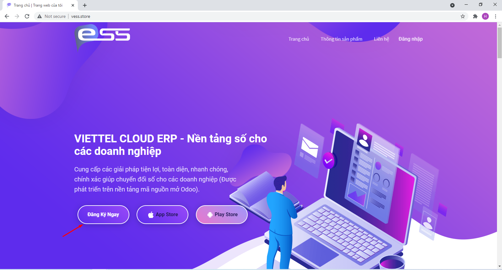
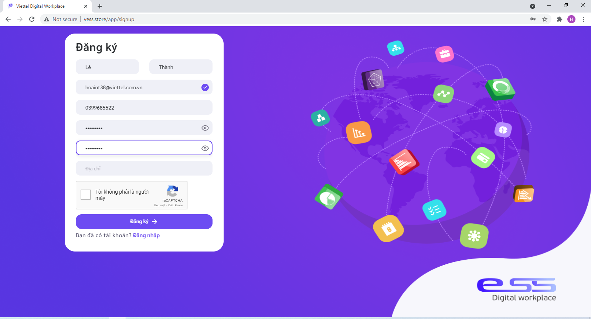
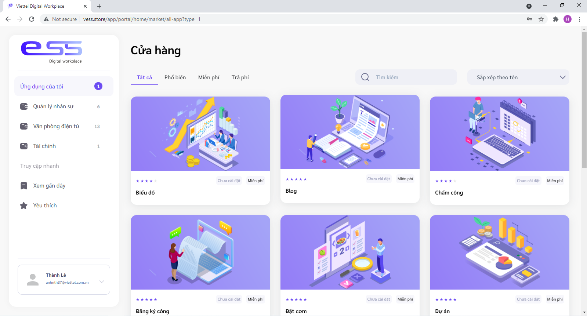
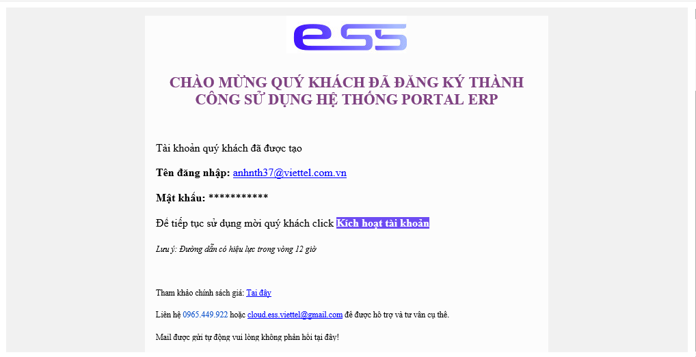
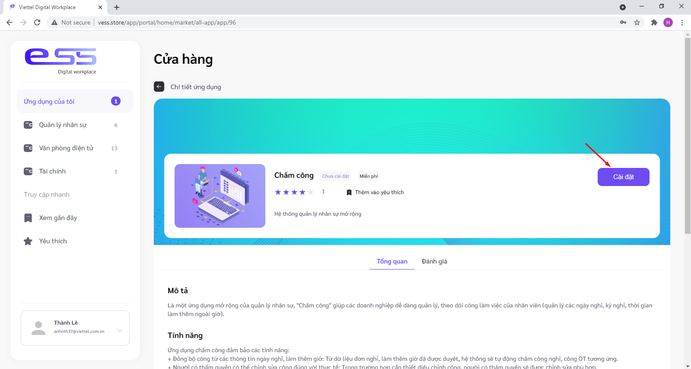
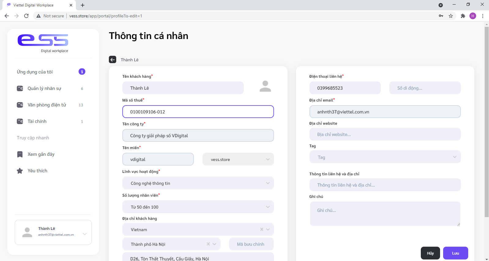
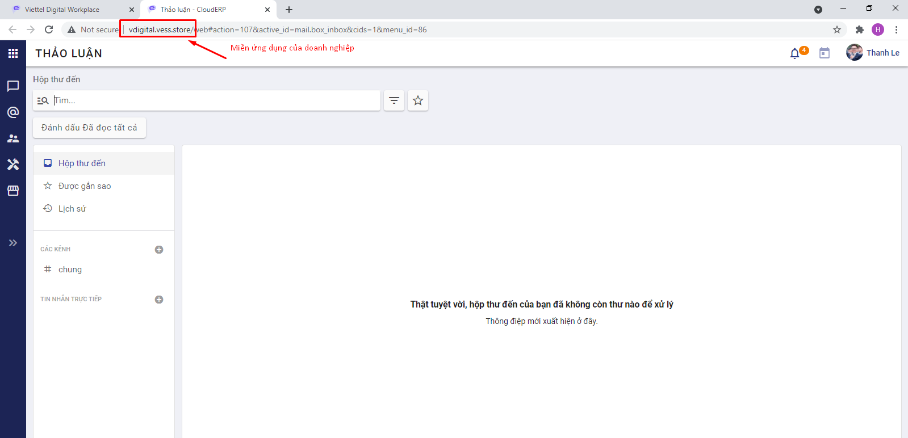
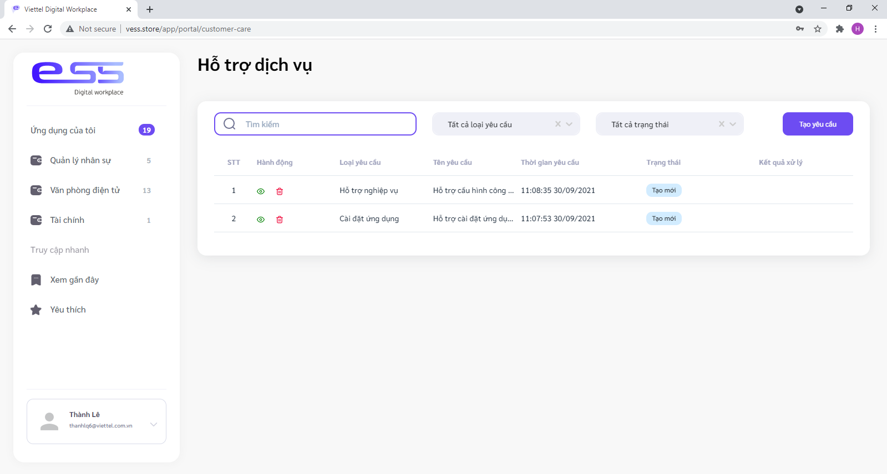
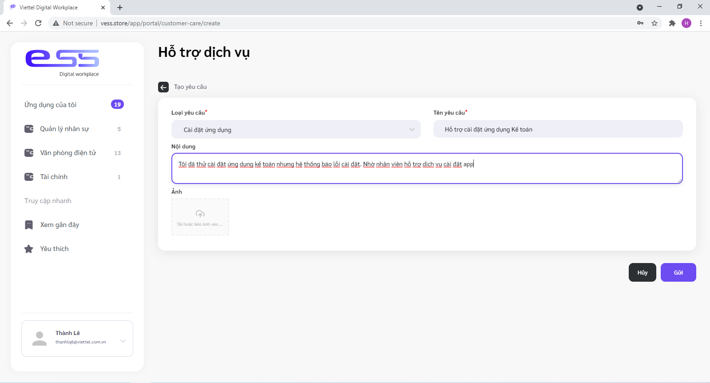

Bắt đầu sử dụng hệ thống vESS
Đăng ký và cài đặt các ứng dụng
Các bước để bắt đầu sử dụng hệ thống vESS như sau:
Bước 1: Đăng ký tài khoản sử dụng vESS
a. Người dùng truy cập vào trang web vess.vn, sau đó chọn Đăng ký ngay

b. Hệ thống mở ra trang đăng ký, người dùng khai báo các thông tin để đăng ký, bấm Đăng ký

Lưu ý:
- Email được dùng cố định xuyên suốt để định danh khách hàng sử dụng hệ thống, người dùng không được dùng email đã đăng ký trên hệ thống.
- Số điện thoại đăng ký phải là số chưa từng được đăng ký sử dụng hệ thống
c. Người dùng kiểm tra email, bấm Kích hoạt tài khoản để xác thực, hệ thống tự động đăng nhập vào hệ thống.
Tại đây, màn hình hiển thị danh sách các ứng dụng đang xuất bản trên hệ thống, người dùng có thể tìm kiếm, xem chi tiết, xem đánh giá bình luận về các ứng dụng này.

Lưu ý: Khi người dùng bấm Đăng ký, hệ thống tự động gửi thư xác thực tài khoản đến địa chỉ email vừa đăng ký. Trong trường hợp sau 3 phút người dùng không nhận được email, vui lòng bấm Gửi lại trên màn hình để hệ thống gửi lại thư xác thực.

Bước 2: Cài đặt ứng dụng
- Với mỗi ứng dụng, khách hàng bấm vào xem chi tiết để có cái nhìn tổng quan về tính năng ứng dụng, bấm Cài đặt để tải ứng dụng dùng thử.

-
Lưu ý: Để cài đặt được ứng dụng, người dùng cần thiết lập các thông tin cơ bản. Vì vậy, hệ thống hiển thị màn hình yêu cầu Bổ sung thông tin.
-
Tại đây, người dùng thiết lập đủ các thông tin yêu cầu, bấm Lưu sau đó bấm lại nút Cài đặt để tiếp tục cài đặt ứng dụng.

-
Một số thông tin người dùng cần chú ý:
- Mã số thuế là mã số thuế của doanh nghiệp, không được trùng với mã số thuế đã tồn tại trên hệ thống.
- Tên miền (domain) thiết lập chính là đường dẫn sử dụng các ứng dụng của doanh nghiệp sau khi đã cài đặt, tên miền là duy nhất, không được trùng với tên miền đã đăng ký trên hệ thống
- Ngôn ngữ được chọn là ngôn ngữ mặc định của các ứng dụng khi cài đặt.
-
Hệ thống hiển thị lên màn hình cảnh báo để xác nhận người dùng có muốn sử dụng bộ dữ liệu mẫu dùng thử không. Nếu người dùng muốn sử dụng bộ dữ liệu mẫu dùng thử, chọn "Có", ngược lại chọn "Không".
-
Hệ thống hiển thị màn hình tiến trình đang cài đặt. Khi ứng dụng được cài đặt thành công, hệ thống hiển thị thông báo cài đặt thành công, nút "Cài đặt" tự động chuyển thành nút "Khởi động". Người dùng bấm Khởi động, hệ thống mở ra 1 tab mới có đường dẫn chính tên miền người dùng đã khai báo với phiên đăng nhập được tự động cập nhật từ phân hệ portal.

Tại đây, người dùng có thể xem menu hoặc trang chủ để biết các menu ứng dụng có thể sử dụng.
Người dùng trở về tab cũ để tiếp tục cài đặt các ứng dụng khác; hoặc trên tab mới vừa mở ra (miền của doanh nghiệp), người dùng bấm vào menu vESS Market trên thanh menu bên trái để trở về màn hình portal.
Lưu ý: Người dùng có thể chủ động thiết lập các thông tin ban đầu bằng cách: Bấm vào mũi tên bên cạnh ảnh đại diện ở góc dưới bên trái màn hình, chọn Thông tin cá nhân, hệ thống hiển thị màn hình thông tin cá nhân; người dùng bấm Chỉnh sửa để cập nhật các thông tin.Sau khi nhập đủ các thông tin yêu cầu, người dùng bấm Lưu để hệ thống ghi nhận thông tin thay đổi*
Bước 3: Hướng dẫn thiết lập ban đầu
Ngay khi khởi động ứng dụng đầu tiên, tức là người dùng đã khởi động 1 miền ứng dụng riêng cho doanh nghiệp. Đó là nơi để quản lý và thực hiện các nghiệp vụ.
Để khởi tạo dữ liệu ban đầu cho doanh nghiệp, khách hàng xem hướng dẫn chi tiết Tại đây
Bước 4: Làm việc với các phân hệ ứng dụng con
-
Ứng dụng Nhân sự:
-
Ứng dụng Kế toán:
-
Các ứng dụng văn phòng điện tử:
Yêu cầu hỗ trợ dịch vụ
Trong trường hợp khách hàng có vướng mắc khi sử dụng dịch vụ, có thể gửi yêu cầu lên hệ thống để được chăm sóc và hỗ trợ dịch vụ
Các bước thực hiện như sau:
Bước 1: Khách hàng gửi yêu cầu hỗ trợ
Khách hàng có thể gửi yêu cầu hỗ trợ bằng cách thực hiện trên hệ thống hoặc gọi điện/ gửi email trực tiếp tới bộ phận hỗ trợ khách hàng.
Khuyến khích khách hàng thực hiện gửi yêu cầu trên hệ thống theo cách sau:
- Khách hàng truy cập vess.vn, đăng nhập hệ thống theo email và mật khẩu đã đăng ký. Hệ thống hiển thị màn hình trang chủ danh sách các ứng dụng đã cài đặt. Nếu người dùng chưa cài đặt ứng dụng nào, hệ thống hiển thị màn hình danh sách tất cả các ứng dụng.
- Khách hàng bấm mũi tên bên cạnh ảnh đại diện ở góc dưới bên trái màn hình, chọn Hỗ trợ dịch vụ, hệ thống hiển thị màn hình danh sách yêu cầu hỗ trợ của khách hàng

- Khách hàng bấm Tạo yêu cầu, nhập các thông tin mô tả chi tiết yêu cầu hỗ trợ và bấm Gửi. Hệ thống ghi nhận yêu cầu hỗ trợ hiển thị lên danh sách yêu cầu hỗ trợ của khách hàng với trạng thái "Tạo mới"

Lưu ý: Đối với các yêu cầu có trạng thái là "Tạo mới", người dùng có thể chỉnh sửa yêu cầu này.
Bước 2: Bộ phân hỗ trợ dịch vụ, chăm sóc khách hàng xem và xử lý các yêu cầu của khách hàng.
Trong quá trình này, nhân viên có thể gọi điện hoặc gửi email theo thông tin khách hàng đã đăng ký để liên hệ trao đổi chi tiết về yêu cầu và hỗ trợ.
Khách hàng theo dõi trạng thái các yêu cầu hỗ trợ của mình trên hệ thống, cụ thể như sau:
- Yêu cầu mới gửi: Hệ thống hiển thị trạng thái "Tạo mới"
- Yêu cầu đã được bộ phận chăm sóc, hỗ trợ dịch vụ tiếp nhận và đang tiến hành xử lý: Hệ thống hiển thị trạng thái "Đang xử lý"
- Yêu cầu đã được xử lý xong: Hệ thống hiển trị trạng thái "Đã xử lý" và nội dung kết quả xử lý.
Một số lưu ý khác
Hệ thống Portal vESS hỗ trợ một số tính năng khác ví dụ:
- Xem thông tin hợp đồng: Bấm mũi tên bên cạnh ảnh đại diện ở góc dưới bên trái màn hình, chọn Thông tin hợp đồng
- Xem thông tin tài nguyên của doanh nghiệp đang hoạt động: mũi tên bên cạnh ảnh đại diện ở góc dưới bên trái màn hình, chọn Thông tin tài nguyên
- Đổi ngôn ngữ sử dụng hệ thống Portal vESS: mũi tên bên cạnh ảnh đại diện ở góc dưới bên trái màn hình, bấm Ngôn ngữ và chọn ngôn ngữ phù hợp. Lưu ý: Đổi ngôn ngữ tại đây không phải là đổi ngôn ngữ sử dụng trên các phân hệ con.